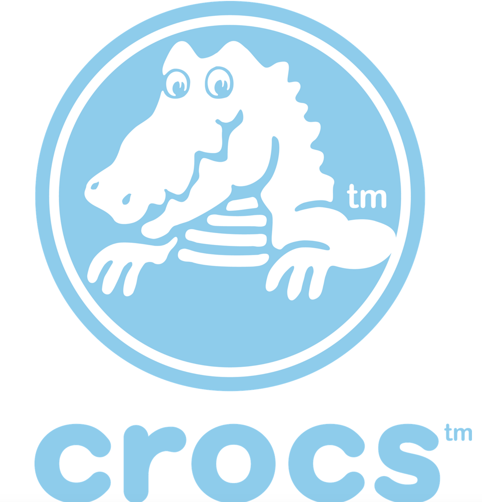
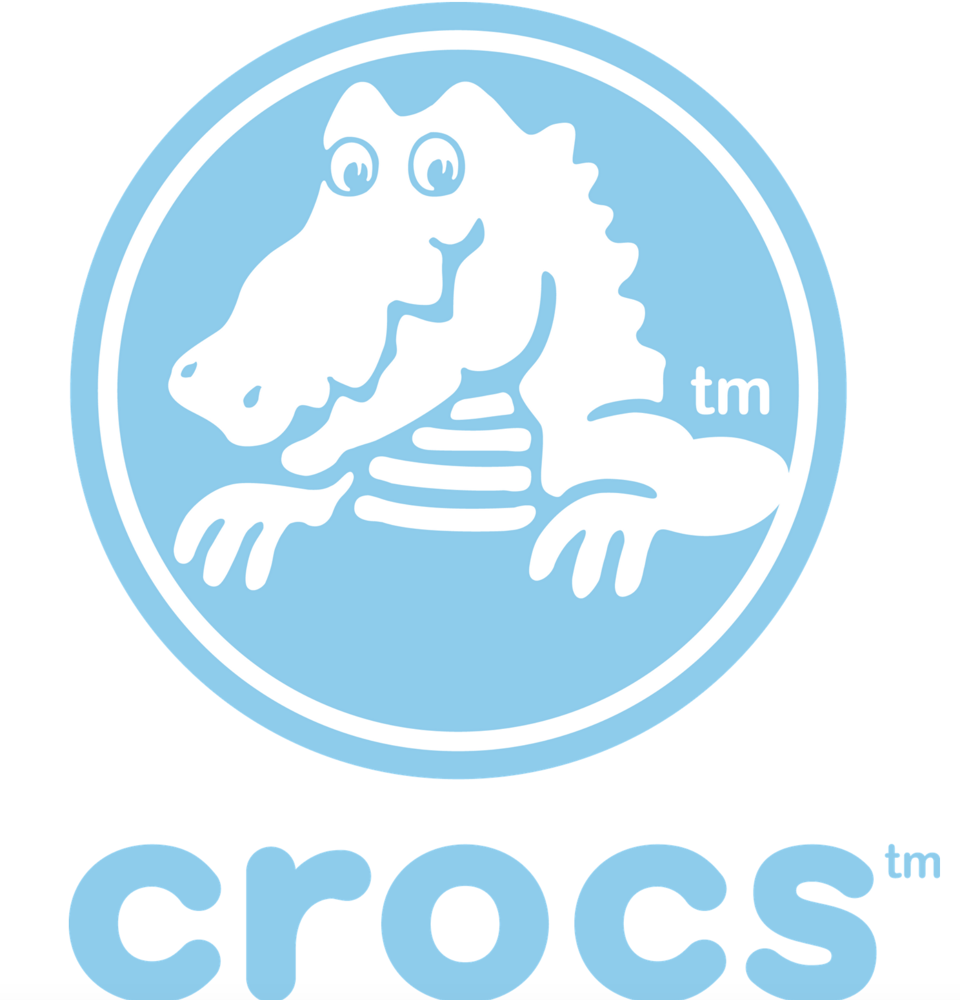

Navigate Leadership Transitions with Confidence and Impact
Strategic coaching for accomplished leaders navigating pivotal moments, complex challenges, and new opportunities.
Book a Discovery CallTrusted by Leaders from Global Organizations
Carlos Trostli has partnered with leaders from some of the world's most respected companies, guiding them through change and helping them achieve lasting success.
 

Who We Are and How We Work
At Trostli Leadership Development, we believe leadership is built on trust, ethics, and clarity of purpose.
Founded by Carlos Trostli—an executive with over 20 years of international experience at P&G, Unilever, Reckitt, and SC Johnson—our approach bridges global business acumen with a deeply human touch.
We help leaders and organizations align cultures, strengthen collaboration, and turn transitions into long-term success.
Are Leadership Transitions Holding You Back?
Every leader faces defining moments – stepping into a new role, driving change, or navigating disruption. These transitions are critical. Handled poorly, they lead to lost momentum, team friction, and missed targets. Handled strategically, they become your launchpad for greater impact.
Navigating Role Transitions
Stepping into a new executive role? Expanding responsibilities? The old playbook might not work. Without rapid adaptation and clear wins, credibility falters, and your influence stalls before it starts.
Leading Through Organizational Change
Restructuring, mergers, or strategic shifts demand careful navigation. Poor stakeholder management or unclear communication breeds resistance, slows progress, and jeopardizes operational success.
Adapting to Market Disruption
When industries shift, balancing core business with innovation is crucial. Failing to adapt quickly or decisively can mean losing market share and falling behind competitors.
Managing Personal Leadership Evolution
As you advance, relying solely on past strengths isn't enough. Without evolving your strategic vision and team empowerment skills, your leadership potential remains untapped, limiting both your career and organizational impact.
Your Framework for Transition Success
We provide the structure and support you need to navigate leadership transitions with confidence and impact. Our proven methodology, combined with personalized coaching, helps you turn high-stakes moments into defining wins.
How It Works: The Four Questions Framework
VISION
Define Your Goal: Gain absolute clarity on your objectives for this transition and beyond. This focus becomes your strategic foundation.
ACTION
Map Your Path: Develop concrete, tailored strategies to achieve your vision. We create a clear, actionable roadmap through complexity.
ANTICIPATION
Mitigate Risks: Identify potential obstacles—external or internal—and proactively develop solutions to keep your momentum strong.
MEASUREMENT
Track Your Success: Establish clear metrics and accountability to monitor progress, celebrate wins, and adjust course effectively.
Achieve Your Goals Through Targeted Support
One-on-One Executive Coaching
Benefit: Gain confidential, objective guidance to navigate your specific challenges, make confident decisions, and accelerate your impact during critical transitions.
Ideal For: Leaders stepping into new roles, facing complex strategic decisions, or seeking a trusted sounding board for high-stakes situations.
High-Performing Team Development
Benefit: Foster alignment, improve communication, and build accountability within your team to execute strategy effectively and achieve collective goals faster.
Ideal For: Newly formed teams, teams navigating change, or groups needing to enhance collaboration and eliminate unproductive activities.
Insightful Leadership Assessments
Benefit: Understand your core strengths and identify key development areas with sophisticated tools, providing a clear path for targeted leadership growth.
Ideal For: Executives seeking self-awareness, organizations identifying high-potential leaders, or individuals planning their next career move.
Targeted Leadership Workshops
Benefit: Develop practical, essential leadership skills (like strategic communication, feedback, delegation) in focused, collaborative sessions designed for busy executives.
Ideal For: Leadership teams needing to build specific capabilities, organizations standardizing leadership practices, or groups seeking practical skill enhancement.
Frequently Asked Questions
Who is Trostli Leadership coaching designed for?
How is this different from other leadership programs?
Is the coaching process confidential?
What is the typical time commitment?
The Trostli Leadership Approach
Trostli Leadership was founded on a simple observation: even the most successful executives benefit from objective guidance during defining moments in their leadership journey. Having navigated complex transitions ourselves, we've developed a methodology that transforms these pivotal moments from potential disruptions into catalysts for unprecedented growth and impact.
Our Values
Clarity Through Complexity
We bring structure and direction to ambiguous situations, helping you distill clear priorities from competing demands.
Honest Perspective
We provide the objective feedback and insights that are often difficult to access at executive levels, delivered with both candor and respect.
Strategic Pragmatism
We balance aspirational thinking with practical execution, ensuring vision translates to measurable results.
Lasting Capability
We develop sustainable leadership skills that extend beyond immediate challenges, enhancing your effectiveness across all aspects of executive function.
Defining Moments That Shape Leadership
Transitions define who we are as leaders. These pivotal moments—stepping into new roles, steering organizational change, or adapting to industry shifts—reveal our capacity to learn, inspire others, and create lasting impact.
Throughout my executive journey, I've transformed transitions into catalysts for growth and influence. From leading global consumer brands at P&G, Reckitt, and Unilever, to serving as CEO of AOL Brazil, to heading a publicly-traded housing development company, each transition reinforced a crucial insight: strategic leadership during change creates extraordinary opportunities.
The secret? Generate early momentum through laser focus, rally others around a compelling vision, and make decisive initial moves that build credibility. This creates a virtuous cycle where each success fuels the next breakthrough.
My leadership across five countries—the United States, Brazil, Germany, Chile, and Argentina—has honed my ability to navigate diverse cultures while maintaining effectiveness. This global perspective now enriches my coaching approach, helping leaders master the human dimensions of organizational change.
Today, I guide executives through their defining moments, transforming challenges into accelerated growth opportunities. Whether supporting first-time leaders, high-potentials preparing for promotion, or seasoned executives overcoming roadblocks, I serve as a trusted partner and sounding board.
Because every transition offers the chance not just to adapt, but to elevate—to lead with renewed purpose, inspire unprecedented commitment, and achieve extraordinary results.
Transform Your Leadership Journey
Schedule a confidential consultation to discuss your specific leadership challenges and opportunities.
Prefer to speak directly? Contact us at:
Trusted by Discerning Leaders
"Working with Trostli Leadership during my transition to [new role] provided the clarity and strategic perspective I needed during a critical inflection point in my career. Their structured approach transformed what could have been a challenging period into an opportunity for significant growth."
[Client Name]
[Position], [Company Name/Logo Placeholder]
"The team development program delivered measurable results within months. Our leadership team now operates with greater alignment, clearer communication, and more effective execution—directly impacting our bottom line."
[Client Name]
[Position], [Company Name/Logo Placeholder]
"Trostli Leadership helped me navigate the complexity of [specific challenge], providing both the strategic framework and accountability I needed to make confident decisions with far-reaching organizational impact."
[Client Name]
[Position], [Company Name/Logo Placeholder]